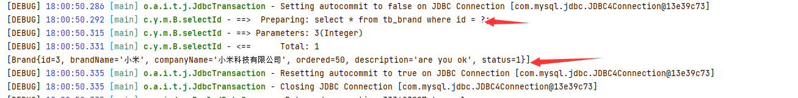

案例实现CRUD
对一个品牌的增删查改案例，这个案例可以学到很多关于mybatis的操作
环境准备
数据库表（tb_brand）及数据准备
-- 删除tb_brand表
drop table if exists tb_brand;
-- 创建tb_brand表
create table tb_brand
(
-- id 主键
id int primary key auto_increment,
-- 品牌名称
brand_name varchar(20),
-- 企业名称
company_name varchar(20),
-- 排序字段
ordered int,
-- 描述信息
description varchar(100),
-- 状态：0：禁用 1：启用
status int
);
-- 添加数据
insert into tb_brand (brand_name, company_name, ordered, description, status)
values ('三只松鼠', '三只松鼠股份有限公司', 5, '好吃不上火', 0),
('华为', '华为技术有限公司', 100, '华为致力于把数字世界带入每个人、每个家庭、每个组织，构建万物互联的智能世界', 1),
('小米', '小米科技有限公司', 50, 'are you ok', 1);实体类 Brand
public class Brand { // id 主键 private Integer id; // 品牌名称 private String brandName; // 企业名称 private String companyName; // 排序字段 private Integer ordered; // 描述信息 private String description; // 状态：0：禁用 1：启用 private Integer status; //省略 setter and getter。自己写时要补全这部分代码 }增加测试类
项目目录结构

- 安装MybatisX插件
查询所有数据
接口定义
public interface BrandMapper {
/**
* 查询所有
*/
List<Brand> selectAll();
}编写SQL语句
<select id="selectAll" resultType="brand">
select *
from tb_brand;
</select>我们可以在mybatis的配置文件中添加
<typeAliases>这个配置，就可以扫描，自动加载指定包，是resultType书写更加简介，类名大小写不分><typeAliases> <package name="com.yang.pojo"/> ></typeAliases>
编写测试方法（和入门案例差不多）
@Test
public void testSelectAll() throws IOException {
//1. 获取SqlSessionFactory
String resource = "mybatis-config.xml";
InputStream inputStream = Resources.getResourceAsStream(resource);
SqlSessionFactory sqlSessionFactory = new SqlSessionFactoryBuilder().build(inputStream);
//2. 获取SqlSession对象
SqlSession sqlSession = sqlSessionFactory.openSession();
//3. 获取Mapper接口的代理对象
BrandMapper brandMapper = sqlSession.getMapper(BrandMapper.class);
//4. 执行方法
List<Brand> brands = brandMapper.selectAll();
System.out.println(brands);
//5. 释放资源
sqlSession.close();
}直接这样写，有些数据没有封装成功，因为用了在Brand类中使用了驼峰命名法，和数据库的列名不一样。没查到。
解决方法：
起别名
用as给列名起别名，保持这两部分的名称一致
><select id="selectAll" resultType="brand"> select id, brand_name as brandName, company_name as companyName, ordered, description, status from tb_brand; ></select>但是如果字段很多这么写就显得不简洁
SQL片段
将需要复用的SQL片段抽取到
sql标签中><sql id="brand_column"> id, brand_name as brandName, company_name as companyName, ordered, description, status ></sql>id属性值是唯一标识，引用时也是通过该值进行引用。
在原sql语句中进行引用
使用
include标签引用上述的 SQL 片段，而refid指定上述 SQL 片段的id值。><select id="selectAll" resultType="brand"> select <include refid="brand_column" /> from tb_brand; ></select>如果还有功能只需要查询部分字段，而不是查询所有字段，那么我们就需要再定义一个 SQL 片段，这就显得不是那么灵活。
使用resultMap解决上述问题
最常见的解决方式
在映射配置文件中使用resultMap定义 字段 和 属性 的映射关系
<resultMap id="brandResultMap" type="brand"> <!-- id：完成主键字段的映射 column：表的列名 property：实体类的属性名 result：完成一般字段的映射 column：表的列名 property：实体类的属性名 --> <result column="brand_name" property="brandName"/> <result column="company_name" property="companyName"/> </resultMap>SQL语句正常编写
要把resultType换成resultMap
<select id="selectAll" resultMap="brandResultMap"> select * from tb_brand; </select>
结果回显：

个体查询
根据id查
在 BrandMapper 接口中定义根据id查询数据的方法
/**
* 查看详情：根据Id查询
*/
Brand selectById(int id);编写SQL语句
<select id="selectById" resultMap="brandResultMap">
select *
from tb_brand where id = #{id};
</select>参数占位符
编写测试方法
进行测试
@Test
public void testSelectById() throws IOException {
//接收参数，该id以后需要传递过来
int id = 1;
//1. 获取SqlSessionFactory
String resource = "mybatis-config.xml";
InputStream inputStream = Resources.getResourceAsStream(resource);
SqlSessionFactory sqlSessionFactory = new SqlSessionFactoryBuilder().build(inputStream);
//2. 获取SqlSession对象
SqlSession sqlSession = sqlSessionFactory.openSession();
//3. 获取Mapper接口的代理对象
BrandMapper brandMapper = sqlSession.getMapper(BrandMapper.class);
//4. 执行方法
Brand brand = brandMapper.selectById(id);
System.out.println(brand);
//5. 释放资源
sqlSession.close();
}执行测试方法结果如下：
占位符：
里我们需要看控制台显示的SQL语句，能看到使用？进行占位。说明我们在映射配置文件中的写的 #{id} 最终会被？进行占位。
mybatis提供了两种参数占位符：
#{} ：执行SQL时，会将 #{} 占位符替换为？，将来自动设置参数值。从上述例子可以看出使用#{} 底层使用的是
PreparedStatement?{}：直接将数据拼接到SQL语句中，会引起SQL注入问题
SQL语句中特殊字段处理：
特殊字符，如大于（>），小于（<）等，这些在xml中有特殊含义，所以此时我们需要将这些符号进行转义。
转义字符
下图的
<就是<的转义字符。
<![CDATA[内容]]>
多条件查询
条件字段 companyName 和 brandName 需要进行模糊查询。
编写接口方法
在 BrandMapper 接口中定义多条件查询的方法。
而该功能有三个参数，我们就需要考虑定义接口时，参数应该如何定义。Mybatis针对多参数有多种实现
方法一：使用
@Param("参数名称")标记每一个参数，在映射配置文件中就需要使用#{参数名称}进行占位List<Brand> selectByCondition(@Param("status") int status, @Param("companyName") String companyName,@Param("brandName") String brandName);方法二：将多个参数封装成一个 实体对象 ，将该实体对象作为接口的方法参数。该方式要求在映射配置文件的SQL中使用
#{内容}时，里面的内容必须和实体类属性名保持一致。List<Brand> selectByCondition(Brand brand);方法三：将多个参数封装到map集合中，将map集合作为接口的方法参数。该方式要求在映射配置文件的SQL中使用
#{内容}时，里面的内容必须和map集合中键的名称一致。List<Brand> selectByCondition(Map map);
编写SQL语句
<select id="selectByCondition" resultMap="brandResultMap">
select *
from tb_brand
where status = #{status}
and company_name like #{companyName}
and brand_name like #{brandName}
</select>编写测试方法
@Test
public void testSelectByCondition() throws IOException {
//接收参数
int status = 1;
String companyName = "华为";
String brandName = "华为";
// 处理参数，使用到模糊查询，要用到"%"
companyName = "%" + companyName + "%";
brandName = "%" + brandName + "%";
//1. 获取SqlSessionFactory
String resource = "mybatis-config.xml";
InputStream inputStream = Resources.getResourceAsStream(resource);
SqlSessionFactory sqlSessionFactory = new SqlSessionFactoryBuilder().build(inputStream);
//2. 获取SqlSession对象
SqlSession sqlSession = sqlSessionFactory.openSession();
//3. 获取Mapper接口的代理对象
BrandMapper brandMapper = sqlSession.getMapper(BrandMapper.class);
//4. 执行方法
//方法一 ：接口方法参数使用 @Param 方式调用的方法
//List<Brand> brands = brandMapper.selectByCondition(status, companyName, brandName);
//方法二 ：接口方法参数是 实体类对象 方式调用的方法
//封装对象
/* Brand brand = new Brand();
brand.setStatus(status);
brand.setCompanyName(companyName);
brand.setBrandName(brandName);*/
//List<Brand> brands = brandMapper.selectByCondition(brand);
//方法三 ：接口方法参数是 map集合对象 方式调用的方法
Map map = new HashMap();
map.put("status" , status);
map.put("companyName", companyName);
map.put("brandName" , brandName);
List<Brand> brands = brandMapper.selectByCondition(map);
System.out.println(brands);
//5. 释放资源
sqlSession.close();
}动态SQL
在多条件查询中，用户在输入条件时，肯定不会所有的条件都填写，这个时候我们的SQL语句就不能那样写的
例如用户只输入 当前状态 时，SQL语句就是
select * from tb_brand where status = #{status}而用户如果只输入企业名称时，SQL语句就是
select * from tb_brand where company_name like #{companName}而用户如果输入了 当前状态 和 企业名称 时，SQL语句又不一样
select * from tb_brand where status = #{status} and company_name like #{companName}针对上述的需要if，choose (when, otherwise)，trim (where, set)foreach
if 标签：条件判断
- test 属性：逻辑表达式
<select id="selectByCondition" resultMap="brandResultMap">
select *
from tb_brand
where
<if test="status != null">
and status = #{status}
</if>
<if test="companyName != null and companyName != '' ">
and company_name like #{companyName}
</if>
<if test="brandName != null and brandName != '' ">
and brand_name like #{brandName}
</if>
</select>如上的这种SQL语句就会根据传递的参数值进行动态的拼接。如果此时status和companyName有值那么就会值拼接这两个条件。

但是它也存在问题，如果此时给的参数值是
Map map = new HashMap();
// map.put("status" , status);
map.put("companyName", companyName);
map.put("brandName" , brandName);拼接的SQL语句就变成了
select * from tb_brand where and company_name like ? and brand_name like ?而上面的语句中 where 关键后直接跟 and 关键字，这就是一条错误的SQL语句。这个就可以使用 where 标签解决
where 标签
- 作用：
- 替换where关键字
- 会动态的去掉第一个条件前的 and
- 如果所有的参数没有值则不加where关键字
<select id="selectByCondition" resultMap="brandResultMap">
select *
from tb_brand
<where>
<if test="status != null">
and status = #{status}
</if>
<if test="companyName != null and companyName != '' ">
and company_name like #{companyName}
</if>
<if test="brandName != null and brandName != '' ">
and brand_name like #{brandName}
</if>
</where>
</select>注意：需要给每个条件前都加上 and 关键字。
单个条件（动态SQL）
有时候，我们列出了三个条件（品牌名称、当前状态、企业名称），用户只能选其中一个，用户到底选哪个，我们不知道，这属于动态SQL语句
这种需求需要使用到 choose（when，otherwise）标签 实现， 而 choose 标签类似于Java 中的switch语句。
在 BrandMapper 接口中定义单条件查询的方法。
/**
* 单条件动态查询
* @param brand
* @return
*/
List<Brand> selectByConditionSingle(Brand brand);编写SQL语句
<select id="selectByConditionSingle" resultMap="brandResultMap">
select *
from tb_brand
<where>
<choose><!--相当于switch-->
<when test="status != null"><!--相当于case-->
status = #{status}
</when>
<when test="companyName != null and companyName != '' "><!--相当于case-->
company_name like #{companyName}
</when>
<when test="brandName != null and brandName != ''"><!--相当于case-->
brand_name like #{brandName}
</when>
</choose>
</where>
</select>编写测试方法
@Test
public void testSelectByConditionSingle() throws IOException {
//接收参数
int status = 1;
String companyName = "华为";
String brandName = "华为";
// 处理参数
companyName = "%" + companyName + "%";
brandName = "%" + brandName + "%";
//封装对象
Brand brand = new Brand();
//brand.setStatus(status);
brand.setCompanyName(companyName);
//brand.setBrandName(brandName);
//1. 获取SqlSessionFactory
String resource = "mybatis-config.xml";
InputStream inputStream = Resources.getResourceAsStream(resource);
SqlSessionFactory sqlSessionFactory = new SqlSessionFactoryBuilder().build(inputStream);
//2. 获取SqlSession对象
SqlSession sqlSession = sqlSessionFactory.openSession();
//3. 获取Mapper接口的代理对象
BrandMapper brandMapper = sqlSession.getMapper(BrandMapper.class);
//4. 执行方法
List<Brand> brands = brandMapper.selectByConditionSingle(brand);
System.out.println(brands);
//5. 释放资源
sqlSession.close();
}未完待续。。。。